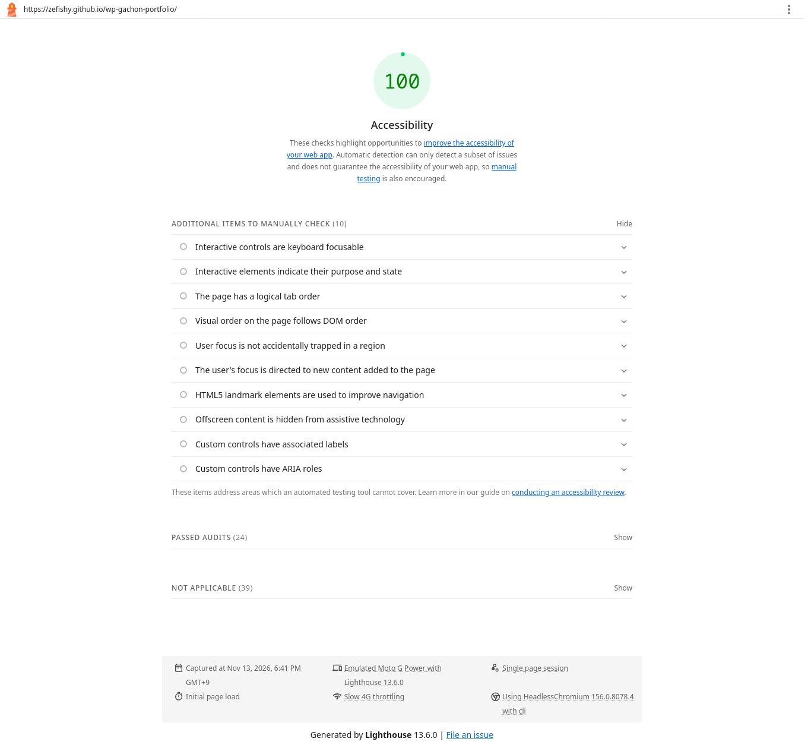

GitHub Pages Deployment Report
Homework 2 takes the portfolio built in Homework 1 and makes it public: GitHub Pages turns the repo into a live website, and a Lighthouse accessibility audit has to score at least 90 on the result. The repo was pushed, the Pages switch was flipped, and the portfolio now lives at zefishy.github.io/wp-gachon-portfolio. This report records the deployment and the audit.
12
live
6 / 6
From commits to a live site
The deployment model from the lecture is a pipeline:
your laptop → GitHub → GitHub Pages builds
→ live on the internet. A plain git push
hands the code to GitHub, Pages converts the repo into a
website, and anyone can visit the URL. The site redeploys on
every push in one to three minutes, serves over HTTPS by
default, and costs nothing for a public repo.
Pages is a static host: plain HTML, CSS, and
JavaScript, images, JSON, and client-side fetch()
all work; PHP, Python, Node.js, and databases do not. The
portfolio is pure static files, so nothing about it needs to
change — the only prerequisite is that
index.html sits at the root of the
deployed branch, which it does.
The push that put the repo on GitHub:
# the local repo was connected to the (empty) GitHub repo and pushed
$ git remote set-url origin git@github.com:zefishy/wp-gachon-portfolio.git
$ git push -u origin main
To github.com:zefishy/wp-gachon-portfolio.git
* [new branch] main -> main
branch 'main' set up to track 'origin/main'.
Twelve commits on main now, working tree clean
— the eleven from the
Homework 1 report, plus a follow-up
that points the portfolio's course-project links at this
library's own live deployment.
Enabling GitHub Pages
With the code up, Pages was switched on in the browser — straight from the lecture:
Open the repo
github.com/zefishy/wp-gachon-portfolio — the repository page.
Click Settings
Top navigation: Code, Issues, Pull requests … Settings.
Scroll to Pages
Left sidebar, under the “Code and automation” section.
Set the source
Under “Build and deployment”: Source → Deploy from a branch, Branch → main, folder → / (root).
Save and wait
The build starts at once and takes about two minutes; refresh the page until the green “Your site is live at…” URL appears.
Test the live site
Open the URL in a browser, try the theme toggle, and open it on a phone — the homework is a public page now.
Two failure modes the lecture warns about, both already ruled
out here: a 404 comes from index.html being missing
from the branch root (ours is at the root), and a greyed-out
Pages section means the repo is private — it has to be
public for Pages on the free plan. If a fresh
push seems not to appear, it is the one-to-three-minute cache:
hard-refresh with Ctrl+Shift+R.
The switch went on the same day as the push. The build finished in under two minutes, the green “Your site is live at…” banner appeared, and the URL has been serving the portfolio over HTTPS since — confirmed with a browser visit (theme toggle and mobile layout checked) and an HTTP 200.
Requirements checklist
The six checklist items, and how the build covers them — five were designed in from the first commit, and the audit confirmed the sixth on the live site:
| Requirement | Status | How it's covered |
|---|---|---|
| ① Semantic HTML | done | <header> (owner, section nav, theme switch), <nav aria-label>, <main> wrapping four <section>s, <footer> — plus a skip link. |
| ② Responsive CSS | done | Mobile-first grid; the narrow-screen pass stacks the hero, stretches the buttons full-width, and drops the cards to one column; verified in a narrow render. |
| ③ At least 1 JS interaction | done | Light/dark toggle in js/main.js — the lecture's own example — cross-fading the colour tokens and saving the choice to localStorage. |
| ④ Lighthouse Accessibility ≥ 90 (screenshot) | done | Scored 100/100 on the live URL with Lighthouse 13.6.0 — the report screenshot is in the result section below. |
| ⑤ Meaningful alt text on all images | done | The one content image (the avatar) carries alt="Portrait of Ryan Wong"; the theme-switch icons are decorative SVGs inside a labelled button. |
| ⑥ Color contrast passes WCAG AA | done | Palette inherited from the course library ramp, where every text pair clears 4.5:1 — the audit's contrast checks on the live site all pass. |
Result: the graded audit
The audit ran against the live URL — zefishy.github.io/wp-gachon-portfolio — with Lighthouse 13.6.0, Accessibility category only, on emulated mobile: Accessibility 100/100.

All 24 applicable checks passed and none failed: the theme switch and every link carry an accessible name, the palette clears colour-contrast, the avatar has alt text, the document has a language and a title, headings step in order, the landmark structure is sound, the skip link works, and tap targets are big enough. Ten more checks are manual (keyboard focus, tab order, focus trapping — worth a quick pass by hand) and 42 were not applicable — a one-page portfolio has no forms, videos, or data tables. The homework target was 90.
Submit: the live URL plus this screenshot on Cybercampus — due Sunday, 15 November.